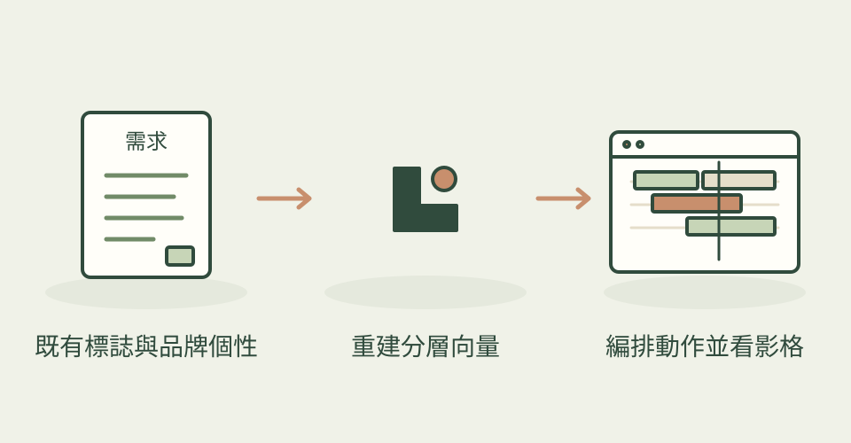

手上只有一張 PNG 標誌，也能把圖形、文字與小圓點分別安排動作。Pixel2Motion 先協助 agent 重建平滑、可修改的 SVG，再讓各部件按品牌個性登場，做出網站開場或載入動畫。
它怎麼幫忙
先確認標誌用途和三個個性詞，例如安靜、精準、輕快，再檢查原圖輪廓，優先用圓形、少量曲線等簡單結構重建。每次把向量疊回原圖比對，確認平滑後才安排動態。交付網頁包含重播、慢速和速度控制，也會檢查關鍵影格、交叉筆畫是否停頓或跳出，以及結尾是否落回原標誌；偏好減少動態的使用者看到靜態版本。這些是作者的流程，本次未執行候選。配圖為作者的 Horizon 範例。
功能快速理解

將既有點陣標誌重建為可修改的 SVG，分部件編排動畫，再比對輪廓與關鍵影格。
功能示意・本站繪製 放大查看可以這樣開口
這是一個可依需求修改的委託範例。
把我提供的咖啡工作室 PNG 標誌，做成一點五秒的網站開場。先保持原本輪廓、字距與顏色，讓圓形圖案先出現，再依序帶出字樣；感覺安靜而俐落。交付可修改 SVG、動畫 CSS 和可重播的 HTML，附原圖疊合與結尾影格比較。
適合什麼工作
適合品牌設計師、接網站案的工作室，以及已有合法標誌原圖、想與工程師協作做動態識別的人。也能用於按鈕懸停與載入狀態。
開始之前
- 準備工具
- 可寫程式並看圖的 agent、Python 3.10+、Pillow、numpy、Chrome 或 Chromium；動態影格檢查需要 Playwright 或等效的可固定時間瀏覽器截圖工具。另轉 GIF 或影片時仍需相應的擷取與編碼流程。
- 使用成本
- 技能採 MIT，主要製作與檢查在本機完成，沒有必需的付費生圖 API。成本主要是 agent 用量、人工檢視及反覆擬合時間。README 提到的商業服務是另一條服務路線，使用開源流程不必購買。
- 交付內容
- 可修改的 logo.svg、motion.css、獨立 HTML 動畫展示、動態規格、輪廓疊合與關鍵影格檢查圖
- 先留意
- 2026-10-28 首次收錄；專案建立於 6 月 12 日，目前提交是 8 月 21 日，不是今天發布。它重建既有標誌並安排動態，不是保證一鍵完美描圖；複雜曲線、字型或低解析原圖仍需人工確認。示例是作者展示，不代表本站測試結果；原有標誌與字體的權利仍須自行確認。
作者與來源
本文依作者公開說明整理，沒有實際執行這個專案。功能插圖由本站繪製，原作者範例另行標示；並非本站執行技能的測試結果。GitHub 星數為專案總量，觀察時間為 2026年10月29日 08:29（台北時間）。
與前次快照相比增加 12 星；這不是 GitHub Trending 排名。